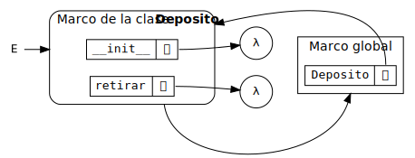

Programación orientada a objetos
Ricardo Pérez López
IES Doñana, curso 2025/2026
1 Introducción
1.1 Recapitulación
Recordemos lo que hemos aprendido hasta ahora:
La abstracción de datos nos permite definir tipos de datos complejos llamados tipos abstractos de datos (TAD), que se describen únicamente mediante las operaciones que manipulan esos datos y con independencia de su implementación.
Las funciones pueden tener estado interno usando clausuras, que se crean a partir de funciones locales, funciones de orden superior y variables no locales.
Una función puede representar un dato.
Un dato puede tener estado interno, usando el estado interno de la función que lo representa.
Además:
El paso de mensajes agrupa las operaciones que actúan sobre ese dato dentro de una función que responde a diferentes mensajes despachando a otras funciones dependiendo del mensaje recibido.
La función que representa al dato encapsula su estado interno junto con las operaciones que lo manipulan en una única unidad sintáctica que oculta sus detalles de implementación.
En conclusión:
Una función puede implementar todo un tipo abstracto de datos.
1.2 Objetos
Al principio, distinguíamos entre funciones y datos: las funciones realizan operaciones sobre los datos y éstos esperan pasivamente a que se opere con ellos.
Cuando empezamos a representar a los datos con funciones, vimos que los datos también pueden encapsular comportamiento.
Esos datos ahora representan información, pero también se comportan como las cosas que representan.
Por tanto, los datos ahora saben cómo reaccionar ante los mensajes que reciben cuando el resto del programa les envía mensajes.
Esta forma de ver a los datos como objetos activos que interactúan entre sí y que son capaces de reaccionar y cambiar su estado interno en función de los mensajes que reciben, da lugar a todo un nuevo paradigma de programación llamado orientación a objetos o Programación Orientada a Objetos (POO).
Definición:
La programación orientada a objetos (POO) es un paradigma de programación en el que los programas se ven como formados por entidades llamadas objetos que recuerdan su propio estado interno y que se comunican entre sí mediante el paso de mensajes que se intercambian entre ellos con la finalidad de:
cambiar sus estados internos,
compartir información y
solicitar a otros objetos el procesamiento de dicha información.
Los pilares fundamentales de la POO son los siguientes:
Abstracción.
Encapsulación.
Herencia.
Polimorfismo.
Los objetos tienen:
Identidad.
Estado.
Comportamiento.
La programación orientada a objetos (también llamada POO, o bien OOP, del inglés Object-Oriented Programming) es un método para organizar programas que reúne muchas de las ideas vistas hasta ahora.
Al igual que las operaciones en las abstracciones de datos, los objetos imponen barreras de abstracción entre el uso y la implementación de los datos.
Al igual que los diccionarios y funciones de despacho, los objetos responden a peticiones que otros objetos les hacen en forma de mensajes para que se comporten de determinada manera.
Los objetos tienen un estado interno local al que no se debería acceder directamente desde el exterior de los mismos, sino únicamente por medio de las operaciones que proporciona el objeto.
A efectos prácticos, por tanto, los objetos son datos abstractos.
El sistema de objetos de Python proporciona una sintaxis cómoda para promover el uso de estas técnicas de organización de programas.
Gran parte de esta sintaxis es compartida con otros lenguajes de programación orientados a objetos.
Ese sistema de objetos ofrece algo más que simple comodidad:
Proporciona una nueva metáfora para diseñar programas en los que varios agentes independientes interactúan dentro del ordenador.
Cada objeto agrupa (encapsula) el estado local y el comportamiento de una manera que abstrae la complejidad de ambos.
Los objetos se comunican entre sí y se obtienen resultados útiles como consecuencia de su interacción.
Los objetos no sólo transmiten mensajes, sino que también comparten el comportamiento con otros objetos del mismo tipo y heredan características de otros tipos relacionados.
El paradigma de la programación orientada a objetos tiene su propio vocabulario que apoya la metáfora del objeto.
Ejercicio
- Investiga en Wikipedia los principales lenguajes orientados a objetos que existen en el mercado. ¿En qué año salieron? ¿Cuál influyó en cuál? ¿Cuáles son los más usados a día de hoy?
2 Conceptos básicos
2.1 Atributos
Los atributos o miembros de un objeto son los nombres asociados a un objeto que permiten acceder a sus características principales, es decir:
su estado y
su comportamiento.
Se puede acceder a los atributos de un objeto usando el operador punto (
.), indicando una referencia al objeto y el nombre del atributo al que se desea acceder:⟨objeto⟩
.⟨atributo⟩
Los objetos llevan asociado su propio espacio de nombres.
El proceso de localizar (si es que existe) la ligadura adecuada que liga, para un objeto concreto, a un nombre de atributo con su valor se denomina resolución del atributo, y es un proceso en el que participa el espacio de nombres del objeto pero posiblemente también otros.
Esto permite que pueda haber atributos distintos con el mismo nombre en objetos distintos.
Existen cuatro tipos principales de atributos:
Datos (campos): representan el estado interno del objeto.
Pueden ser:
Variables.
Constantes.
Comportamiento: representan el comportamiento del objeto, es decir, qué puede hacer el objeto o qué mensajes puede recibir.
Pueden ser:
Funciones internas del objeto.
Métodos.
Variables:
También llamadas variables de instancia.
Representan el estado interno del objeto.
Normalmente, se almacenan dentro del objeto, en su espacio de nombres.
Constantes:
También llamadas constantes de instancia.
Normalmente suelen guardarse en un espacio de nombres común a todos los objetos del mismo tipo.
Funciones internas del objeto:
Son funciones almacenadas dentro del objeto, por lo que sus ligaduras se guardan en su espacio de nombres.
Actúan como cualquier otra función y se invocan como tal.
Métodos:
También llamados métodos de instancia.
Son funciones que se invocan sobre el objeto, como un argumento destacado.
NO están almacenados dentro del objeto, ya que el comportamiento suele ser el mismo entre todos los objetos del mismo tipo, por lo que se almacenan en otro espacio de nombres común a todos los objetos del mismo tipo.
2.2 Clases
- Una clase es una construcción sintáctica que los lenguajes de programación orientados a objetos proporcionan como azúcar sintáctico para implementar tipos abstractos de datos de una forma cómoda y directa sin necesidad de usar funciones de orden superior, estado local o diccionarios de despacho.
En programación orientada a objetos:
Se habla siempre de clases y no de tipos abstractos de datos.
Una clase es la implementación de un tipo abstracto de datos.
Las clases definen nuevos tipos de datos de pleno derecho en el lenguaje de programación.
- Recordemos el ejemplo del tema anterior en el que implementamos el tipo abstracto de datos Depósito mediante la siguiente función:
def deposito(fondos):
def retirar(cantidad):
nonlocal fondos
if cantidad > fondos:
return 'Fondos insuficientes'
fondos -= cantidad
return fondos
def ingresar(cantidad):
nonlocal fondos
fondos += cantidad
return fondos
def saldo():
return fondos
def despacho(mensaje):
if mensaje == 'retirar':
return retirar
elif mensaje == 'ingresar':
return ingresar
elif mensaje == 'saldo':
return saldo
else:
raise ValueError('Mensaje incorrecto')
return despacho- Ese mismo TAD se puede implementar como una clase de la siguiente forma:
class Deposito:
def __init__(self, fondos):
self.fondos = fondos
def retirar(self, cantidad):
if cantidad > self.fondos:
return 'Fondos insuficientes'
self.fondos -= cantidad
return self.fondos
def ingresar(self, cantidad):
self.fondos += cantidad
return self.fondos
def saldo(self):
return self.fondos- En el momento en que se ejecute esta definición, el intérprete
incorporará al sistema un nuevo tipo llamado
Deposito.
- Más tarde estudiaremos los detalles técnicos que diferencian ambas
implementaciones, pero ya apreciamos que por cada operación sigue
habiendo una función (aquí llamada método), que
desaparece la función
despachoy que aparece una extraña función__init__.
Podemos usar docstrings para documentar tanto la propia clase como los métodos de la misma:
class Deposito: """ Un depósito del banco. """ def __init__(self, fondos): """Crea un depósito con una cantidad de fondos.""" self.fondos = fondos def retirar(self, cantidad): """Retira una cantidad de dinero del depósito.""" if cantidad > self.fondos: return 'Fondos insuficientes' self.fondos -= cantidad return self.fondos def ingresar(self, cantidad): """Ingresa una cantidad de dinero en el depósito.""" self.fondos += cantidad return self.fondos def saldo(self): """Devuelve el saldo del depósito.""" return self.fondos- Por convenio, el docstring de una clase siempre se escribe usando el estilo multilínea, al igual que pasa con los módulos.
La definición de una clase es una estructura sintáctica que crea un espacio de nombres y determina su propio ámbito.
Esa definición está formada por un bloque de sentencias que se ejecutarán dentro de ese ámbito en el momento en que el intérprete ejecute la definición:
class⟨nombre⟩:
⟨sentencia⟩^+Todas las definiciones que se realicen directamente en el ámbito de la clase como consecuencia de ejecutar su bloque de sentencias, serán locales a la clase y se almacenarán en el espacio de nombres de la clase, ya que, durante la ejecución del bloque de sentencias, el espacio de nombres actual es el espacio de nombres de la clase.
Los elementos así definidos y almacenados directamente en el espacio de nombres de la clase se denominan miembros o atributos de la clase.
Las funciones que son miembros de una clase se denominan métodos de la clase.
Por ejemplo, las funciones
__init__,retirar,ingresarysaldopertenecen a la claseDepositoy sólo existen dentro de ella (son locales a la clase), porque sus definiciones se almacenan en el espacio de nombres de la clase.Ese espacio de nombres es un marco que se almacena en la pila mientras se ejecuta la definición de la clase, y que formará parte del entorno mientras dure esa ejecución.
Cuando se termina de ejecutar la definición de la clase, se saca ese marco de la pila y se convierte en un objeto que almacena en forma de atributos a los miembros de esa clase.
Por tanto, ese objeto acaba almacenando el espacio de nombres de la clase y representando a dicha clase dentro del programa.
Recordemos que durante la definición de una función no se ejecuta su cuerpo, sino que simplemente se crea la ligadura entre el nombre de la función y la propia función.
Por tanto, al ejecutar la definición de una clase no se ejecutan los cuerpos de sus métodos.
Por ejemplo, en el código anterior:
class Deposito: def __init__(self, fondos): self.fondos = fondos def retirar(self, cantidad): if cantidad > self.fondos: return 'Fondos insuficientes' self.fondos -= cantidad return self.fondos def ingresar(self, cantidad): self.fondos += cantidad return self.fondos def saldo(self): return self.fondosEn la línea 10 tendríamos el siguiente entorno:

En general, no importa el orden en el que aparecen las definiciones dentro de la clase, salvo excepciones.
Ya sabemos que el cuerpo de una función (y recordemos que, aquí, las funciones se llaman métodos) no se ejecuta cuando se define la función, sino cuando se la llama. Por tanto, si un método usa a otro, no importará el orden en el que se hayan definido.
Por ejemplo, en el código anterior, los miembros se podrían haber definido en cualquier otro orden (
retirardespués desaldo,ingresarantes de__init__…, da igual).En cambio, si hacemos una definición a partir de otra, el orden sí importará. Por ejemplo, aquí sí es importante que
holase defina antes quesaludo:
Como se dijo anteriormente, con las clases ocurre lo siguiente:
Al entrar en la definición de la clase, se crea un nuevo espacio de nombres en forma de marco en la pila, que contiene las definiciones que se van creando durante la ejecución de la clase.
Al salir de la definición de la clase, se saca el marco de la pila y con él se crea un objeto que acaba almacenando ese espacio de nombres, de forma que las ligaduras que contiene se convierten en atributos del objeto.
La clase acaba siendo un objeto más, almacenado en el montículo, que se ligará al nombre de la clase en el espacio de nombres donde se haya definido ésta (normalmente, el marco global).
Ese objeto «clase» permanecerá en memoria mientras exista, al menos, una referencia que apunte a él.
Si ejecutamos la anterior definición en el Pythontutor, observamos que se crea en memoria un objeto que, como cualquier otro objeto, contiene su propio espacio de nombres representado con una estructura similar al diccionario de despacho que creábamos antes a mano, el cual almacena los miembros de la clase como atributos del objeto, asociando el nombre de cada operación con la función (mejor dicho, con el método) correspondiente.
Ese objeto representa a la clase en la memoria durante la ejecución del programa, y se liga al nombre de la clase en el espacio de nombres actual (que normalmente será el marco global).

Deposito en
memoriaComo las clases son objetos, debemos usar el operador punto (
.) para acceder a un miembro de una clase, indicando la referencia a la clase (normalmente, su nombre) y el nombre del miembro al que se desea acceder:En realidad, todo lo que hemos dicho hasta ahora sobre la creación de clases y el acceso a sus miembros, es esencialmente el mismo mecanismo que se usa en la creación y uso de módulos.
Sin embargo, hay que tener cuidado, ya que las clases no funcionan exactamente igual que los módulos en lo que se refiere al entorno, como veremos luego en un apartado posterior.
2.2.1 Instancias
Un objeto representa un dato abstracto de la misma manera que una clase representa un tipo abstracto de datos.
Es decir: un objeto es un caso particular de una clase, motivo por el que también se le denomina instancia de una clase.
Un objeto es un dato que pertenece al tipo definido por la clase de la que es instancia.
También se puede decir que «el objeto pertenece a la clase» aunque sea más correcto decir que «es instancia de la clase».
El proceso de crear un objeto a partir de una clase se denomina instanciar la clase o instanciación.
En un lenguaje orientado a objetos puro, todos los datos que manipula el programa son objetos y, por tanto, instancias de alguna clase.
Existen lenguajes orientados a objetos impuros o híbridos en los que coexisten objetos con otros datos que no son instancias de clases.
Python es considerado un lenguaje orientado a objetos puro, ya que en Python todos los datos son objetos.
Por ejemplo, en Python:
El tipo
intes una clase.El entero
5es un objeto, instancia de la claseint.
Java es un lenguaje orientado a objetos híbrido, ya que un programa Java manipula objetos pero también manipula otros datos llamados primitivos, que no son instancias de ninguna clase sino que pertenecen a un tipo primitivo del lenguaje.
Por ejemplo, en Java:
El tipo
Stringes una clase, por lo que la cadena"Hola"es un objeto, instancia de la claseString.El tipo
intes un tipo primitivo del lenguaje, por lo que el número5no es ningún objeto, sino un dato primitivo.
Las clases, por tanto, son como plantillas para crear objetos que comparten (normalmente) el mismo comportamiento y la misma estructura interna.
Los objetos tienen tres características básicas:
Identidad: un objeto se puede distinguir de otros.
Estado: un objeto tiene un estado interno que puede cambiar durante su vida.
Comportamiento: un objeto se comporta de cierta forma ante la recepción de ciertos mensajes.
En Python podemos instanciar una clase (creando así un nuevo objeto) llamando a la clase como si fuera una función, del mismo modo que hacíamos con la implementación funcional que hemos estado usando hasta ahora:
Lo que ocurre al ejecutar este código es lo siguiente:
Se crea en el montículo un objeto, instancia de la clase
Deposito, que contiene su propio espacio de nombres representado por una estructura con forma de diccionario.Se invoca al método
__init__sobre el objeto recién creado (ya hablaremos de ésto más adelante).La expresión
Deposito(100)devuelve una referencia al nuevo objeto, que representa, a grandes rasgos, la posición de memoria donde se encuentra almacenado el objeto (su identidad).Esa referencia es la que se almacena en la variable
dep. O sea: en la variable no se almacena el objeto en sí, sino una referencia al objeto.
En este ejemplo,
0x7fba5a16d978es la dirección de memoria donde está almacenado el objeto al que hace referencia la variabledep(es decir, su identidad):Cuando una variable contiene una referencia a un objeto, decimos que la variable se refiere al objeto o que apunta al objeto.
Aunque actualmente las referencias representan direcciones de memoria, eso no quiere decir que vaya a ser siempre así. Ese es un detalle de implementación basada en una decisión de diseño del intérprete que puede cambiar en posteriores versiones del mismo.
Esa decisión, en la práctica, es una cuestión que no nos afecta (o no debería, al menos) a la hora de escribir nuestros programas.
- Con Pythontutor podemos observar las estructuras que se forman al definir la clase y al instanciar dicha clase en un nuevo objeto:
class Deposito:
def __init__(self, fondos):
self.fondos = fondos
def retirar(self, cantidad):
if cantidad > self.fondos:
return 'Fondos insuficientes'
self.fondos -= cantidad
return self.fondos
def ingresar(self, cantidad):
self.fondos += cantidad
return self.fondos
def saldo(self):
return self.fondos
dep = Deposito(100)
Deposito y el
objeto dep en memoria- Se aprecia claramente que la clase almacena los métodos y la instancia almacena sus fondos, y todo son atributos.
Un objeto tiene existencia propia e independiente y permanecerá en la memoria siempre que haya al menos una referencia que apunte a él (en caso contrario, el recolector de basura lo eliminará).
De hecho, un objeto puede tener varias referencias apuntándole.
Por ejemplo, si hacemos:
tendremos dos variables que contienen la misma referencia y, por tanto, se refieren (o apuntan) al mismo objeto.
En ese caso, decimos que
dep1ydep2son idénticas, porque las identidades de los objetos a los que apuntan son iguales, cosa que podemos comprobar usandoidois:No olvidemos que las variables no contienen al objeto en sí mismo, sino una referencia a éste.
- Gráficamente, el caso anterior se puede representar de la siguiente forma:

dep1 y
dep2) que apuntan al mismo objetoRecordemos que en Python todos los tipos son clases.
Para saber la clase a la que pertenece el objeto, se usa la función
typeo el atributo__class__del objeto:Se nos muestra que la clase del objeto
depes__main__.Deposito, que representa la claseDepositodefinida en el módulo__main__.Esto demuestra que el objeto recuerda su clase (la clase que se usó para instanciarlo) porque lo guarda en un atributo.
Otra forma de comprobar si un objeto es instancia de una clase determinada es usar la función
isinstance(obj,cls), que devuelveTruesi el objeto obj es instancia de la clase cls:
2.3 Estado
Los objetos son datos abstractos que poseen su propio estado interno, el cual puede cambiar durante la ejecución del programa como consecuencia de los mensajes recibidos o enviados por los objetos.
Eso significa que los objetos son datos mutables.
Dos objetos no idénticos podrán tener estados internos distintos.
2.3.1 Variables de instancia
En terminología orientada a objetos, el estado de un objeto se almacena en variables denominadas variables de instancia o propiedades del objeto (si bien, en Python el concepto de propiedad tiene un significado específico).
Las constantes de instancia también pueden considerarse parte del estado de un objeto, si bien nunca cambian durante la vida de éste.
Esas variables de instancia se almacenan como atributos del objeto, dentro de éste, por lo que representan variables locales al objeto en su espacio de nombres.

dep y su atributo
fondosRecordemos que debemos usar el operador punto (
.) para acceder a un atributo del objeto a partir de una referencia suya usando la sintaxis:⟨objeto⟩
.⟨atributo⟩Por ejemplo, para acceder al atributo
fondos(que aquí es una variable de instancia) de un objetodepde la claseDeposito, se usaría la expresióndep.fondos:Y podemos cambiar el valor de la variable de instancia mediante asignación:
Por supuesto, dos objetos distintos pueden tener valores distintos en sus atributos, ya que cada atributo pertenece a un objeto determinado:

Deposito y los
objetos dep1 y dep2 en memoriaEn Python es posible acceder directamente al estado interno de un objeto (o, lo que es lo mismo, al valor de sus campos) desde el exterior del mismo, cosa que, en principio, podría considerarse una violación del principio de ocultación de información y del concepto mismo de abstracción de datos.
Incluso es posible cambiar directamente el valor de un atributo desde fuera del objeto, o crear atributos nuevos dinámicamente, haciendo simplemente una asignación.
Todo esto puede resultar chocante para un programador de otros lenguajes, pero en la práctica resulta útil al programador por la naturaleza dinámica del lenguaje Python y por el estilo de programación que promueve.
Como cualquier variable en Python, un atributo empieza a existir en el momento en el que se le asigna un valor:
Por tanto, en Python, los atributos de un objeto se crean en tiempo de ejecución mediante una simple asignación.
Este comportamiento contrasta con el de otros lenguajes de programación (como Java, por ejemplo), donde los atributos de un objeto vienen determinados de antemano por la clase a la que pertenece y siempre son los mismos.
Así, en Java, dos objetos de la misma clase siempre tendrán las mismas variables de instancia, definidas por la clase (aunque la misma variable de instancia podrá tener valores distintos en los dos objetos, naturalmente).
Ese comportamiento dinámico de Python a la hora de crear atributos permite resultados interesantes imposibles de conseguir en Java, como que dos objetos distintos de la misma clase puedan poseer distintos atributos:
>>> dep1 = Deposito(100) >>> dep2 = Deposito(400) >>> dep1.uno = 'hola' # el atributo uno sólo existe en dep1 >>> dep2.otro = 'adiós' # el atributo otro sólo existe en dep2 >>> dep1.uno 'hola' >>> dep2.uno Traceback (most recent call last): File "<stdin>", line 1, in <module> AttributeError: 'Deposito' object has no attribute 'uno' >>> dep2.otro 'adiós' >>> dep1.otro Traceback (most recent call last): File "<stdin>", line 1, in <module> AttributeError: 'Deposito' object has no attribute 'otro'
- Con Pythontutor podemos observar lo que ocurre al instanciar dos objetos y crear atributos distintos en cada objeto:
class Deposito:
def __init__(self, fondos):
self.fondos = fondos
def retirar(self, cantidad):
if cantidad > self.fondos:
return 'Fondos insuficientes'
self.fondos -= cantidad
return self.fondos
def ingresar(self, cantidad):
self.fondos += cantidad
return self.fondos
def saldo(self):
return self.fondos
dep1 = Deposito(100)
dep2 = Deposito(400)
dep1.uno = 'hola'
dep2.otro = 'adiós'
Deposito y los
objetos dep1 y dep2 con distintos
atributos2.4 La antisimetría dato-objeto
Se da una curiosa contra-analogía entre los conceptos de dato y objeto:
Los objetos ocultan sus datos detrás de abstracciones y exponen las funciones que operan con esos datos.
Las estructuras de datos exponen sus datos y no contienen funciones (o, al menos, no las exponen).
Son definiciones virtualmente opuestas y complementarias.
3 Paso de mensajes
3.1 Resolución de atributos
Cuando se intenta acceder a un atributo de un objeto, lo que hace el intérprete es lo siguiente:
Primero busca dicho atributo dentro del objeto.
Si lo encuentra, devuelve su valor.
En caso contrario, lo busca en la clase del objeto.
Puede haber más clases involucradas, como veremos posteriormente.
Supongamos que tenemos el objeto
depde la claseDeposito.Si hacemos:
el intérprete devolverá el valor del atributo
fondosque encuentra en el objetodep, ya que el objeto contiene un atributo con ese nombre.En cambio, si hacemos:
el intérprete buscará primero el atributo
retiraren el objetodepy, al no encontrarlo allí, pasa a buscarlo en la claseDeposito. Ahí sí lo encuentra, así que devuelve su valor, que en este caso es un método.
Por tanto, lo anterior es casi equivalente a hacer:
Pero no es exactamente igual, ya que en el primer caso nos devuelve un método, mientras que en el segundo caso nos devuelve una función:
Esto no nos pilla de sorpresa, ya que sabíamos que
retirares un método para el objetodeppero es una función para la claseDeposito.Las funciones definidas dentro de una clase son métodos para las instancias de esa clase.
3.2 Ejecución de métodos
Como las clases implementan las operaciones como métodos, el paso de mensajes se realiza ahora invocando, sobre un objeto, el método correspondiente al mensaje que se enviaría al objeto.
Por ejemplo, si queremos enviarle el mensaje
saldoal objetodeppara saber cuál es el saldo actual de ese depósito, invocaríamos el métodosaldosobre el objetodepde esta forma:Si la operación requiere argumentos, se le pasarán al método también:
Ya tenemos que
retirares un método para el objetodepy que, por tanto,dep.retirarnos devuelve ese método.Pero, ¿qué ocurre cuando se invoca a un método sobre un objeto?
No es lo mismo hacer:
que hacer:
ya que en el primer caso obtenemos el valor del atributo (que es un método), pero en el segundo caso estamos invocando al método sobre el objeto.
Supongamos que o es una instancia de la clase C, que m es un método almacenado como un atributo de la clase C y que o no contiene ningún atributo que se llame m.
La ejecución del método m con argumentos a_1, a_2, \ldots, a_n sobre el objeto o tiene esta forma:
o
.m(a_1,a_2,\ldots,a_n)Pues bien: el intérprete de Python lo traduce por una llamada a función con esta forma:
C
.m(o,a_1,a_2,\ldots,a_n)Es decir: el intérprete llama a la función m definida en la clase C y le pasa automática e implícitamente el objeto o como primer argumento (el resto de los argumentos originales irían a continuación de o).
Esto nos vuelve a demostrar que los métodos no son más que una forma especial de función.
No olvidemos que quien almacena los métodos es la clase, no el objeto.
Por ejemplo, hacer:
equivale a hacer:
De hecho, el intérprete traduce el primer código al segundo automáticamente.
Esto facilita la implementación del intérprete, ya que todo se convierte en llamadas a funciones.
Para la clase
Deposito,retirares una función, mientras que, para el objetodep,retirares un método.Aunque son la misma cosa, el intérprete los trata de forma distinta según el contexto.
3.3 Definición de métodos
Esa es la razón por la que los métodos se definen siempre con un parámetro extra que representa el objeto sobre el que se invoca el método (o, dicho de otra forma, el objeto que recibe el mensaje).
Ese parámetro extra (por regla de estilo) se llama siempre
self, si bien ese nombre no es ninguna palabra clave y se podría usar cualquier otro.Por tanto, siempre que definamos un método, lo haremos como una función que tendrá siempre un parámetro extra que será siempre el primero de sus parámetros y que se llamará
self.
- Por ejemplo, en la clase
Deposito, obsérvese que todos los métodos tienenselfcomo primer parámetro:
class Deposito:
def __init__(self, fondos):
self.fondos = fondos
def retirar(self, cantidad):
if cantidad > self.fondos:
return 'Fondos insuficientes'
self.fondos -= cantidad
return self.fondos
def ingresar(self, cantidad):
self.fondos += cantidad
return self.fondos
def saldo(self):
return self.fondosEl método
saldode la claseDepositorecibe un argumentoselfque, durante la llamada al método, contendrá el objeto sobre el que se ha invocado dicho método:En este caso, contendrá el objeto del que se desea conocer los fondos que posee.
Por tanto, dentro de
saldo, accedemos a los fondos del objeto usando la expresiónself.fondos, y ese es el valor que retorna el método.Dentro del programa, la expresión
dep.saldo()se traducirá comoDeposito.saldo(dep).Es importante recordar que el parámetro
selfse pasa automáticamente durante la llamada al método y, por tanto, no debemos pasarlo nosotros o se producirá un error por intentar pasar más parámetros de los requeridos por el método.
El método
ingresartiene otro argumento además delself, que es la cantidad a ingresar:En este caso,
selfcontendrá el objeto en el que se desea ingresar la cantidad deseada.Dentro del método
ingresar, la expresiónself.fondosrepresenta el valor del atributofondosdel objetoself.Por tanto, lo que hace el método es incrementar el valor de dicho atributo en el objeto
self, sumándole la cantidad indicada en el parámetro.Por ejemplo, la expresión
dep.ingresar(35)se traducirá comoDeposito.ingresar(dep, 35). Por tanto, en la llamada al método,selfvaldrádepycantidadvaldrá35.
3.3.1 Entorno durante la ejecución de métodos
Durante la ejecución de un método en Python, el entorno no contiene ni la clase a la que pertenece el método ni el objeto sobre el que se invoca.
Es decir: los métodos no pueden considerarse clausuras, ya que no recuerdan el contexto en el que se definieron.
Por tanto, si un método quiere acceder a un miembro de cualquier clase (incluso de su misma clase), tendrá que hacerlo siempre a través de una referencia (con el operador
.), nunca directamente.
- Por tanto, un método puede llamar a otro, pero siempre a través de la referencia al objeto que recibe el mensaje, incluso aunque los dos métodos pertenezcan a la misma clase.
Por ejemplo, esto funcionará:
- El método
dosno está en el entorno del métodouno, así que no lo puede llamar directamente.
Por ejemplo: en el siguiente código, al invocar al método
unosobre el objetoade la claseA, se tienen los siguientes entornos antes y durante la invocación del método:El entorno del método no incluye a la propia clase
Ani al objeto sobre el que se invoca el método.

Como otro ejemplo, si recordamos la clase
Deposito:class Deposito: def __init__(self, fondos): self.fondos = fondos def retirar(self, cantidad): if cantidad > self.fondos: return 'Fondos insuficientes' self.fondos -= cantidad return self.fondos def ingresar(self, cantidad): self.fondos += cantidad return self.fondos def saldo(self): return self.fondos dep = Deposito(100) dep.ingresar(200)
Durante la ejecución del método
ingresar(digamos, en la línea 12 del código anterior), la situación en la memoria sería:
Y, por tanto, el entorno estaría formado por el marco de
ingresary el marco global, en ese orden.En consecuencia, ni la clase
Depositoni el objeto sobre el que se invoca el método (depoself, que son el mismo) están en el entorno del métodoingresar.

3.4 Métodos mágicos y constructores
En Python, los métodos cuyo nombre empieza y termina por
__se denominan métodos mágicos y tienen un comportamiento especial.En concreto, el método
__init__se invoca automáticamente cada vez que se instancia un nuevo objeto a partir de una clase.Coloquialmente, se le suele llamar el constructor de la clase, y es el responsable de inicializar el objeto de forma que tenga un estado inicial adecuado desde el momento de su creación.
Entre otras cosas, el constructor se encarga de asignarle los valores iniciales adecuados a los atributos del objeto.
Ese método recibe como argumentos (además del
self) los argumentos indicados en la llamada a la clase que se usó para instanciar el objeto.
Por ejemplo: en la clase
Deposito, tenemos:Ese método
__init__se encarga de crear el atributofondosdel objeto que se acaba de crear (y que recibe a través del parámetroself), asignándole el valor del parámetrofondos.¡Cuidado! No confudir la expresión
self.fondosconfondos. La primera se refiere al atributofondosdel objetoself, mientras que la segunda se refiere al parámetrofondos.
Cuando se crea un nuevo objeto de la clase
Deposito, llamando a la clase como si fuera una función, se debe indicar entre paréntesis (como argumento) el valor del parámetro que luego va a recibir el método__init__(en este caso, los fondos iniciales):La ejecución de este código produce el siguiente efecto:
Se crea en memoria una instancia de la clase
Deposito.Se invoca el método
__init__sobre el objeto recién creado, de forma que el parámetroselfrecibe una referencia a dicho objeto y el parámetrofondostoma el valor100, que es el valor del argumento en la llamada aDeposito(100).En la práctica, esto equivale a decir que la expresión
Deposito(100)se traduce a ref.__init__(100), donde ref es una referencia al objeto recién creado.La expresión
Deposito(100)devuelve la referencia al objeto.Esa referencia es la que se almacena en la variable
dep.
Ejercicio
- Comprobar el funcionamiento del constructor en Pythontutor.
En resumen: la expresión C
(a_1,a_2,\ldots,a_n)usada para crear una instancia de la clase C lleva a cabo las siguientes acciones:Crea en memoria una instancia de la clase C y guarda en una variable temporal (llamémosla ref, por ejemplo) una referencia al objeto recién creado.
Invoca a ref
.__init__(a_1,a_2,\ldots,a_n)Devuelve ref.
En consecuencia, los argumentos que se indican al instanciar una clase se enviarán al método
__init__de la clase, lo que significa que tendremos que indicar tantos argumentos (y del tipo apropiado) como espere el método__init__.En caso contrario, tendremos un error:
>>> dep = Deposito() # no indicamos ningún argumento cuando se espera uno Traceback (most recent call last): File "<stdin>", line 1, in <module> TypeError: __init__() missing 1 required positional argument: 'fondos' >>> dep = Deposito(1, 2) # mandamos dos argumentos cuando se espera sólo uno Traceback (most recent call last): File "<stdin>", line 1, in <module> TypeError: __init__() takes 2 positional arguments but 3 were givenEs importante tener en cuenta, además, que el constructor
__init__no debe devolver ningún valor (o, lo que es lo mismo, debe devolverNone), o de lo contrario provocará un error de ejecución.
4 Identidad e igualdad
4.1 Identidad
Ya hemos dicho que los objetos tienen existencia propia e independiente.
La identidad describe la propiedad que tienen los objetos de distinguirse de los demás objetos.
Dos objetos del mismo tipo son idénticos si un cambio en cualquiera de los dos objetos provoca también el mismo cambio en el otro objeto.
Dicho de otra forma: dos objetos son idénticos si son intercambiables en el código fuente del programa sin que se vea afectado el comportamiento del mismo.
Es evidente que dos objetos de distinto tipo no pueden ser idénticos.
Cuando introducimos mutabilidad y estado en nuestro modelo computacional, muchos conceptos que antes eran sencillos se vuelven problemáticos.
Entre ellos, el problema de determinar si dos objetos son «el mismo objeto», es decir, si son idénticos.
Por ejemplo, supongamos que hacemos:
¿Son
res1yres2el mismo objeto?Es razonable decir que sí, ya que tanto
res1comores2se comportan siempre de la misma forma (las dos son funciones que restan25a su argumento).De hecho,
res1puede sustituirse porres2(y viceversa) en cualquier lugar del programa sin que afecte a su funcionamiento.
En cambio, supongamos que hacemos dos llamadas a
Deposito(100):¿Son
dep1ydep2el mismo objeto?Evidentemente no, ya que podemos obtener resultados distintos al enviarles el mismo mensaje (uno que sabemos que no cambia el estado del objeto):
Incluso aunque podamos pensar que
dep1ydep2son «iguales» en el sentido de que ambos han sido creados evaluando la misma expresión (Deposito(100)), no es verdad que podamos sustituirdep1pordep2(o viceversa) en cualquier parte del programa sin afectar a su funcionamiento.
Es otra forma de decir que los objetos no tienen transparencia referencial, ya que se pierde en el momento en que incorporamos estado y mutabilidad en nuestro modelo computacional.
Pero al perder la transparencia referencial, se vuelve más difícil de definir de una manera formal y rigurosa qué es lo que significa que dos objetos sean «el mismo objeto».
De hecho, el significado de «el mismo» en el mundo real que estamos modelando con nuestro programa es ya bastante difícil de entender.
En general, sólo podemos determinar si dos objetos aparentemente idénticos son realmente «el mismo objeto» modificando uno de ellos y observando a continuación si el otro ha cambiado de la misma forma.
Pero la única manera de saber si un objeto ha «cambiado» es observando el «mismo» objeto dos veces, en dos momentos diferentes, y comprobando si ha cambiado alguna propiedad del objeto de la primera observación a la segunda.
Por tanto, no podemos determinar si ha habido un «cambio» si no podemos determinar a priori si dos objetos son «el mismo», y no podemos determinar si son el mismo si no podemos observar los efectos de ese cambio.
Esto nos lleva a una definición circular, donde un término depende del otro y viceversa.
Por ejemplo, supongamos que Pedro y Pablo tienen un depósito con 100 € cada uno.
Si los creamos así:
los dos depósitos son distintos.
Por tanto, las operaciones realizadas en el depósito de Pedro no afectarán al de Pablo, y viceversa.
En cambio, si los creamos así:
estamos definiendo a
dep_Pablopara que sea exactamente el mismo objeto quedep_Pedro.Por tanto, ahora Pedro y Pablo son cotitulares de un mismo depósito compartido, y si Pedro hace una retirada de efectivo a través de
dep_Pedro, Pablo observará que hay menos dinero endep_Pablo(porque son el mismo depósito).
Estas dos situaciones, similares pero distintas, pueden provocar confusión al crear modelos computacionales.
En concreto, con el depósito compartido puede ser especialmente confuso el hecho de que haya un objeto (el depósito) con dos nombres distintos (
dep_Pedroydep_Pablo).Si estamos buscando todos los sitios de nuestro programa donde pueda cambiarse el depósito de
dep_Pedro, tendremos que recordar buscar también los sitios donde se cambie adep_Pablo.
Los problemas de identidad sólo se da cuando permitimos que los objetos sean mutables.
Si Pedro y Pablo sólo pudieran comprobar los saldos de sus depósitos y no pudieran realizar operaciones que cambiaran sus fondos, entonces no haría falta comprobar si los dos depósitos son distintos o si por el contrario son realmente el mismo depósito. Daría igual.
En general, siempre que no se puedan modificar los objetos, podemos suponer que un objeto compuesto se define como la suma de sus partes.
Pero esto deja de ser válido cuando incorporamos mutabilidad, porque entonces un objeto compuesto tiene una «identidad» que es algo diferente de las partes que lo componen.
Por ejemplo, un número racional viene definido por su numerador y su denominador.
El número racional \frac{4}{3} está completamente determinado por su numerador 4 y su denominador 3. Es eso y nada más.
Pero no tiene sentido considerar que un número racional es un objeto mutable con identidad propia, puesto que si pudiéramos cambiar su numerador o su denominador ya no tendríamos «el mismo» número racional, sino que tendríamos otro diferente.
Si al racional \frac{4}{3} le cambiamos el numerador 4 por 5, obtendríamos el nuevo racional \frac{5}{3}, y no tendría sentido decir que ese nuevo racional es el antiguo racional \frac{4}{3} modificado. Éste ya no está.
En cambio, un depósito sigue siendo «el mismo» depósito aunque cambiemos sus fondos haciendo una retirada de efectivo.
Pero también podemos tener dos depósitos distintos con el mismo estado interno.
Esta complicación es consecuencia, no de nuestro lenguaje de programación, sino de nuestra percepción del depósito bancario como un objeto.
Como usamos referencias para referirnos a un determinado objeto y acceder al mismo, resulta fácil comprobar si dos objetos son idénticos (es decir, si son el mismo objeto) simplemente comparando referencias. Si las referencias son iguales, es que estamos ante un único objeto.
Esto es así ya que, por lo general, las referencias se corresponden con direcciones de memoria. Es decir: una referencia a un objeto normalmente representa la dirección de memoria donde se empieza a almacenar dicho objeto.
Dos objetos pueden ser iguales y, en cambio, no ser idénticos.
Resumiendo:
Cuando preguntamos si dos objetos son iguales, estamos preguntando si parecen el mismo objeto, es decir, si tienen la misma forma y el mismo contenido.
Cuando preguntamos si son idénticos, estamos preguntando si son el mismo objeto.
La forma de comprobar en Python si dos objetos son idénticos es usar el operador
isque ya conocemos:La expresión \underline{\textbf{\textit{o}}\ \texttt{is}\ \textbf{\textit{p}}} devolverá
Truesi tanto o como p son referencias al mismo objeto.
Como ya estudiamos en su día, la expresión \underline{\textbf{\textit{o}}\ \ \texttt{is}\ \ \textbf{\textit{p}}} equivale a:
id(o) == id(p)Por tanto, lo que hace es comparar el resultado de la función
id, que devuelve un identificador único (un número) para cada objeto.Ese identificador es la dirección de memoria donde se almacena el objeto. Por tanto, es la dirección a donde apuntan sus referencias.
4.2 Igualdad
Supongamos que queremos modelar el funcionamiento de una cola (una estructura de datos en la que los elementos entran por un lado y salen por el contrario en el orden en que se han introducido).
El código podría ser el siguiente, utilizando una lista para almacenar los elementos:
Si hacemos:
es evidente que
cola1ycola2hacen referencia a objetos separados y, por tanto, no son idénticos, ya que no se refieren al mismo objeto.Aunque no son idénticos, sí podemos decir que son iguales ya que pertenecen a la misma clase, poseen el mismo estado interno (el mismo contenido) y se comportan de la misma forma al recibir la misma secuencia de mensajes en el mismo orden:
Pero si preguntamos al intérprete si son iguales, nos dice que no:
Esto se debe a que, en ausencia de otra definición de igualdad y mientras no se diga lo contrario, dos objetos de clases definidas por el programador son iguales sólo si son idénticos.
Es decir: por defecto, \underline{\textbf{\textit{x}}\ \ \texttt{==}\ \ \textbf{\textit{y}}} sólo si \underline{\textbf{\textit{x}}\ \ \texttt{is}\ \ \textbf{\textit{y}}}.
Esto es lo que técnicamente se denomina igualdad por identidad.
Para cambiar ese comportamiento predeterminado, tendremos que definir qué significa que dos instancias de nuestra clase son iguales.
Por ejemplo: ¿cuándo podemos decir que dos objetos de la clase
Colason iguales?Podemos decir que dos colas son iguales cuando tienen el mismo estado interno. En este caso: dos colas son iguales cuando tienen los mismos elementos en el mismo orden.
Es lo que técnicamente se denomina igualdad estructural.
4.2.1
__eq__
Para implementar nuestra propia lógica de igualdad en nuestra clase, debemos definir en ella el método mágico
__eq__.Este método se invoca automáticamente cuando se hace una comparación con el operador
==y el operando izquierdo es una instancia de nuestra clase. El operando derecho se envía como argumento en la llamada al método.Dicho de otra forma:
Si la clase de
cola1tiene definido el método__eq__, entoncescola1 == cola2equivale acola1.__eq__(cola2).En caso contrario,
cola1 == cola2seguirá valiendo lo mismo quecola1 is cola2, como acabamos de ver.
No es necesario definir el operador
!=, ya que Python 3 lo define automáticamente a partir del==.
Para crear una posible implementación del método
__eq__, podemos aprovecharnos del hecho de que dos listas son iguales cuando tienen exactamente los mismos elementos en el mismo orden (justo lo que necesitamos para nuestras colas):def __eq__(self, otro): if type(self) != type(otro): return NotImplemented # no tiene sentido comparar objetos de distinto tipo return self.items == otro.items # son iguales si tienen los mismos elementosSe devuelve el valor especial
NotImplementedcuando no tiene sentido comparar un objeto de la claseColacon un objeto de otro tipo.Si introducimos este método dentro de la definición de la clase
Cola, tendremos el resultado deseado:
4.2.2
__hash__
Recordemos lo que ya sabemos:
Existen datos hashables y datos no hashables.
Los datos hashables son aquellos que se pueden comparar entre sí con
==y además llevan asociado un número entero llamado hash.Los datos hashables pueden guardarse en un conjunto o usarse como claves de un diccionario.
Los datos mutables no pueden ser hashables.
Si x es hashable,
hash(x)debe devolver un número que nunca cambie durante la vida de x.Si x no es hashable,
hash(x)lanza una excepciónTypeError.
Lo que hace la función
hashes llamar al método__hash__sobre su argumento.Por tanto, la llamada a
hash(x)es equivalente a hacer x.__hash__().
Los métodos
__eq__y__hash__están relacionados entre sí, porque siempre se tiene que cumplir la siguiente condición:Si x
==y, entonceshash(x)debe ser igual quehash(y).Por tanto, siempre se tiene que cumplir que:
Si x
==y, entonces x.__hash__()==y.__hash__().Lo que equivale también a decir que:
Si x
.__hash__()!=y.__hash__(), entonces x!=y.Para ello, debemos tener en cuenta varias consideraciones a la hora de crear nuestras clases:
Si una clase define su propio método
__hash__, debe definir también un__eq__que vaya a juego con el__hash__.Por tanto (contrarrecíproco del anterior), si una clase no define su propio método
__eq__, tampoco debe definir su propio método__hash__.Las clases definidas por el programador ya traen de serie una implementación predefinida de
__eq__y__hash__que cumplen que:x
==y sólo si xisy, como ya vimos antes.x
.__hash__()devuelve un valor que garantiza que si x==y, entonceshash(x)==hash(y).
(Esto se debe a que la clase hereda los métodos
__eq__y__hash__de la claseobject, como veremos en la siguiente unidad.)
Si una clase no define
__eq__pero no se desea que sus instancias sean hashables, debe definir su método__hash__comoNoneincluyendo la sentencia:__hash__=Noneen la definición de la clase.
Si una clase define
__eq__pero no define__hash__, es como si implícitamente hubiera definido__hash__=None(lo hace el intérprete internamente).Por tanto, en ese caso sus instancias no serán hashables.
Si las instancias de la clase son mutables y ésta define
__eq__, lo normal es que no defina__hash__, ya que los objetos mutables no son hashables, en general.No obstante, hay casos particulares de objetos mutables que pueden ser hashables, como veremos en breve.
Hemos dicho que la condición principal que se tiene que cumplir es que:
Si x
==y, entonceshash(x)==hash(y).Y, por tanto, se tiene que cuplir su contrarrecíproco, que es:
Si
hash(x)!=hash(y), entonces x!=y.Lo cual NO significa que se tenga que cumplir que:
Si x
!=y, entonceshash(x)!=hash(y).Sin embargo, aunque no sea necesario que se cumpla, a efectos prácticos sí que resulta conveniente cumplir la condición anterior en la medida de lo posible, ya que de esta forma ganaremos en eficiencia cuando intentemos acceder a nuestros objetos de manera directa si los almacenamos en una colección.
Por desgracia, resulta prácticamente imposible poder cumplir la condición anterior para todos los objetos, pero aún así deberíamos intentar que nuestro algoritmo de hashing cumpla dicha condición con el mayor número de objetos posible.
Cuando esa condición no se cumple, tenemos lo que se llama una colisión.
Es decir: tenemos una colisión cuando varios objetos distintos tienen el mismo valor de hash.
En tal caso, tenemos que:
x
!=y, perohash(x)==hash(y).Como dijimos antes, las colisiones son prácticamente inevitables, pero hay que procurar implementar nuestro
__hash__de forma que se produzcan lo menos posible, ya que mejora el rendimiento.
Dicho de otra forma, nuestro
__hash__debe cumplir siempre:Si x
==y, entonceshash(x)==hash(y)pero, al mismo tiempo, debe procurar cumplir siempre que pueda:
Si x
!=y, entonceshash(x)!=hash(y).En realidad, una buena implementación de
__hash__es aquella que reparte uniformemente los objetos entre los posibles valores de hash.Es decir: la idea principal es que el método
__hash__no asocie muchos objetos a un mismo valor de hash y al mismo tiempo haya otros valores de hash a los que se les asocien pocos objetos (o ninguno).Si muchos objetos tienen el mismo hash, ese reparto no sería uniforme, sino que estaría muy descompensado, y provocaría un peor rendimiento en los accesos a los objetos dentro de las colecciones.
Por otra parte, el cálculo del hash no debería ser costoso.
Una forma sencilla de crear el
__hash__de una clase sería usar elhashde una tupla que contenga las variables de estado de la clase (siempre que estas sean hashables también):Las colas son mutables y, por tanto, no pueden ser hashables, así que no definiremos ningún método
__hash__en la claseCola.De esta forma, como sí hemos definido un método
__eq__en la clase, el intérprete automáticamente hará__hash__=Noney convertirá a las colas en no hashables.
Es importante no romper el contrato entre
__eq__y__hash__.Es decir, hay que garantizar que si dos objetos son iguales, sus hash también deben ser iguales.
De lo contrario, se pueden dar situaciones extrañas:
Aunque los objetos mutables no deberían ser hashables, existen dos técnicas que nos permiten obtener objetos que sean simultáneamente mutables y hashables:
Implementando igualdad estructural por comparación entre atributos inmutables y calculando el hash a partir de esos atributos.
Implementando igualdad por identidad y calculando el hash a partir de la identidad del objeto.
Si entre los atributos de un objeto hay un subconjunto de ellos que nunca cambian, se puede implementar igualidad estructural mediante la comparación de esos atributos.
En tal caso, el hash se puede calcular a partir de esos atributos que nunca cambian.
Por ejemplo, si el DNI de una persona nunca cambia, podríamos usarlo para comprobar si dos personas son iguales y además calcular su hash:
Así, las instancias de
Personaserán mutables y también hashables.
Por otra parte, como vimos anteriormente, si una clase no implementa su propia versión de
__eq__y no define__hash__=None, entonces:Implementa igualidad por identidad, de manera que dos instancias de la clase serán iguales sólo si son idénticos (\underline{\textbf{\textit{x}}\ \ \texttt{==}\ \ \textbf{\textit{y}}} sólo si \underline{\textbf{\textit{x}}\ \ \texttt{is}\ \ \textbf{\textit{y}}}).
Sus objetos serán hashables.
El hash de sus instancias se calculará a partir de sus identidades.
Por ejemplo:
Esta es otra forma de tener objetos mutables y hashables.
4.3 Otros métodos mágicos
4.3.1
__repr__
- Existe una función llamada
reprque devuelve la expresión canónica de un valor, es decir, la cadena de símbolos que mejor representa a ese valor.
La expresión que vaya en esa cadena debe ser sintáctica y semánticamente correcta según las reglas del lenguaje.
Además, esa expresión debe contener toda la información necesaria para reconstruir el valor.
El intérprete interactivo de Python usa
reprcuando le pedimos que evalúe una expresión:
Recordemos que no todo valor tiene expresión canónica; por ejemplo, las funciones:
En este caso, lo que nos devuelve
reprno tiene la información suficiente como para construir la funciónmax.De hecho, ni siquiera es una expresión válida en el lenguaje:
Al aplicar la función
reprsobre una instancia de una clase definida por el programador, obtenemos una representación que, en general, no es correcta ni contiene la información suficiente como para representar al objeto o reconstruirlo.Por ejemplo:
>>> dep = Deposito(100) >>> dep.retirar(30) >>> repr(dep) '<__main__.Deposito object at 0x7fed83fd9160>'Nos devuelve una cadena que que simplemente nos informa de:
La clase a la que pertenece el objeto, que se obtiene mediante
type(dep).El
iddel objeto en hexadecimal, que se obtiene mediantehex(id(dep)).
Pero esa cadena no contiene ninguna expresión válida en Python y tampoco nos dice cuántos fondos contiene el depósito, por ejemplo.
Por tanto, con esa cadena no podemos reconstruir el objeto
dep.
En este caso, lo ideal sería que
repr(dep)devolviera una expresión no ambigua con la que pudiéramos reconstruir el objetodepcon toda la información que contiene (su estado interno).Es decir, buscamos algo así:
En este último caso, la cadena resultante contiene la expresión
Deposito(70), que sí representa adecuadamente al objetodep:Es importante no confundir la cadena
'Deposito(70)'que devuelvereprcon la expresiónDeposito(70)que lleva dentro.
La función
evalen Python evalúa la expresión contenida en una cadena y devuelve el valor resultante:Sólo se puede aplicar a cadenas:
Y esas cadenas tienen que ser sintáctica y semánticamente correctas:
Las funciones
evalyreprestán relacionadas de forma que siempre debería cumplirse lo siguiente:eval(repr(v))==vPor ejemplo:
En cambio, ahora mismo tenemos que:
Lo que hace realmente la expresión
repr(v)es llamar al método__repr__del objetov.Por tanto, la siguiente expresión:
es equivalente a ésta:
Por ejemplo:
Lo que tenemos que hacer es definir adecuadamente un método
__repr__en nuestra claseDeposito.
Ejercicio
- Inténtalo primero.
En la clase
Depositopodríamos hacer algo así:De esta forma, conseguimos el efecto deseado:
Para implementar el método
__repr__de la clasePersona, podríamos probar a hacer:Pero obtendríamos un resultado incorrecto, porque el DNI y el nombre de la persona deberían ir entre comillas, ya que son cadenas literales:
La solución sería aplicar la función
reprtambién a los argumentos del constructor dePersona:Esto se puede abreviar haciendo uso de la conversión
ren los campos de sustitución de la f-string:
Es importante señalar que no siempre se puede definir un
__repr__adecuado para un objeto.Esto es así porque no siempre es posible representar con una expresión todo el estado interno del objeto.
De hecho, un objeto puede tener estado interno que no siquiera sea visible ni conocido en el exterior.
Por ejemplo, si cada objeto de la clase
Depositoguardara un historial de las operaciones que se han ido realizando con ese depósito, ese historial formaría parte del estado interno del objeto pero no aparecería como parámetro en el constructor.Por tanto, no podríamos describir con una expresión
Deposito(...)(ni con ninguna otra) todo el estado interno del objeto.
Una forma de solucionar este problema sería hacer que el constructor de la clase pudiera recibir un parámetro adicional opcional que contenga ese historial:
Ese parámetro sólo se usaría en ese caso, es decir, que no estaría pensado para ser usado de forma habitual al crear objetos
Deposito.
4.3.2
__str__
El método
__str__se invoca automáticamente cuando se necesita convertir un valor al tipostr.Por tanto, la siguiente expresión:
es equivalente a ésta:
Por ejemplo:
Existen muchos casos donde es necesario convertir un valor a cadena, explícita o implícitamente. Por ejemplo, la función
printconvierte a cadena su argumento antes de imprimirlo.
Si la clase del objeto
vno tiene definido el método__str__, por defecto se entiende que se tiene__str__=__repr__. Por tanto, en tal caso se llama en su lugar al método__repr__.¿Cuál es la diferencia entre
__repr__y__str__?La finalidad de
__repr__es ser no ambiguo y deberíamos implementarlo siempre en todas nuestras clases (cuando sea posible).La finalidad de
__str__es ser legible para el usuario y no es estrictamente necesario implementarlo.
Por ejemplo, en el módulo
datetimetenemos clases que sirven para manipular fechas y horas.La clase
datedel módulodatetimenos permite crear objetos que representan fechas:Al llamar a
reprsobredobtenemos una representación que nos permite reconstruir el objeto:Y al llamar a
strsobredobtenemos una versión más fácil de entender para un ser humano:
Se puede observar aquí que el intérprete usa
reprpara mostrar la forma normal del objeto:Y que
printusastrpara imprimir el objeto de una forma legible:Recordemos que
printimprime una cadena por la salida (sin comillas) y devuelveNone.
5 Encapsulación
5.1 Encapsulación
En programación orientada a objetos, decimos que los objetos están encapsulados.
La encapsulación es un concepto fundamental en programación orientada a objetos, aunque no pertenece exclusivamente a este paradigma.
Aunque es uno de los conceptos más importantes de la programación orientación a objetos, no hay un consenso general y universalmente aceptado sobre su definición.
Además, es un concepto relacionado con la abstracción y la ocultación de información, y a veces se confunde con estos, lo que complica aún más la cosa.
Nosotros vamos a estudiar la encapsulación como dos mecanismos distintos pero relacionados:
Por una parte, la encapsulación es un mecanismo de los lenguajes de programación que permite que los datos y las operaciones que se puedan realizar sobre esos datos se agrupen juntos en una sola unidad sintáctica.
Por otra parte, la encapsulación es un mecanismo de los lenguajes de programación por el cual sólo se puede acceder al interior de un objeto mediante las operaciones que forman su barrera de abstracción, impidiendo acceder directamente a los datos internos del mismo y garantizando así la protección de datos.
En definitiva, nos referimos a un mecanismo que garantiza que los objetos actúan como datos abstractos.
Vamos a ver cada uno de ellos con más detalle.
5.1.1 La encapsulación como mecanismo de agrupamiento
El mecanismo de las clases nos permite crear estructuras que agrupan datos y operaciones en una misma unidad.
Al instanciar esas clases, aparecen los objetos, que conservan esa misma característica de agrupar datos (estado interno) y operaciones en una sola cosa.
De esta forma, las operaciones acompañan a los datos allá donde vaya el objeto.
Por tanto, al pasar un objeto a alguna otra parte del programa, estamos también pasando las operaciones que se pueden realizar sobre ese objeto, o lo que es lo mismo, los mensajes a los que puede responder.
En un lenguaje de programación, llamamos ciudadano de primera clase (first-class citizen) a todo aquello que:
Puede ser pasado como argumento de una operación.
Puede ser devuelto como resultado de una operación.
Puede ser asignado a una variable o ligado a un identificador.
En definitiva, un ciudadano de primera clase es un valor de un determinado tipo, simple o compuesto.
Los objetos se pueden manipular (por ejemplo, enviarles mensajes) a través de las referencias, y éstas se pueden pasar como argumento, devolver como resultado y asignarse a una variable.
Por tanto, los objetos son ciudadanos de primera clase.
Por ejemplo, si definimos una función que calcula la diferencia entre los saldos de dos depósitos, podríamos hacer:
Es decir:
La función
diferenciarecibe como argumentos los dos depósitos (que son objetos), por lo que éstos son ciudadanos de primera clase.Los objetos encapsulan:
sus datos (su estado interno) y
sus operaciones (los mensajes a los que puede responder)
juntos en una sola unidad sintáctica, a la que podemos acceder usando una sencilla referencia, como
dep1odep2.Para obtener el saldo no se usa una función externa al objeto, sino que se le pregunta a este a través de la operación
saldocontenida dentro del objeto.
En resumen, decir que los objetos están encapsulados es decir que:
Agrupan datos y operaciones en una sola unidad.
Son ciudadanos de primera clase.
Es posible manipularlos por completo usando simplemente una referencia.
La referencia representa al objeto.
5.1.2 La encapsulación como mecanismo de protección de datos
Un dato abstracto es aquel que se define en función de las operaciones que se pueden realizar sobre él.
Los objetos son datos abstractos y, por tanto, su estado interno debería manejarse únicamente mediante operaciones definidas a tal efecto, impidiendo el acceso directo a los atributos internos del objeto.
Según esto, podemos imaginar que:
Los atributos que almacenan el estado interno del objeto están encapsulados dentro del mismo.
Las operaciones con las que se puede manipular el objeto rodean a esos atributos formando una cápsula, de forma que, para poder acceder al interior, hay que hacerlo necesariamente a través de esas operaciones.

- Esas operaciones son las que aparecen en la especificación de su tipo abstracto y, por tanto, definen de qué manera podemos manipular al objeto desde el exterior del mismo.

5.1.2.1 Visibilidad
Para garantizar esta restricción de acceso, los lenguajes de programación a menudo facilitan un mecanismo por el cual el programador puede definir la visibilidad de cada miembro de una clase.
De esta forma, el programador puede «marcar» que determinadas variables de instancia o métodos sólo sean accesibles desde el interior de esa clase o que, por el contrario, sí se pueda acceder a ellos desde el exterior de la misma.
\text{Visibilidad} \begin{cases} \text{No se puede acceder desde el exterior, o} \\ \text{Sí se puede acceder desde el exterior} \end{cases}
Cada una de estas dos posibilidades da lugar a un tipo distinto de visibilidad:
Visibilidad privada: si un miembro tiene visibilidad privada, sólo podrá accederse a él desde dentro de esa clase, pero no desde fuera de ella.
Visibilidad pública: si un miembro tiene visibilidad pública, podrá accederse a él tanto desde dentro como desde fuera de la clase.
Por tanto, desde el exterior de un objeto sólo podremos acceder a los miembros públicos de ese objeto.

Cada lenguaje de programación tiene su propia manera de implementar mecanismos de visibilidad.
En Python, el mecanismo es muy sencillo:
Si el nombre de un miembro (de clase o de objeto) definido dentro del cuerpo de una clase empieza (pero no acaba) por
__, entonces es privado. En caso contrario, es público.Los métodos mágicos (como
__init__,__eq__, etc.) tienen nombres que empiezan y acaban por__, así que no cumplen la condición anterior y, por tanto, son públicos.
Por ejemplo:
class Prueba: def __uno(self): print("Este método es privado, ya que su nombre empieza por __") def dos(self): print("Este método es público") def __tres__(self): print("Este método también es público, porque su nombre empieza y acaba por __") p = Prueba() p.__uno() # No funciona, ya que __uno es un método privado p.dos() # Funciona, ya que el método dos es público p.__tres__() # También funciona
Los miembros privados sólo son accesibles desde dentro de la clase:
>>> class Prueba: ... def __uno(self): ... print("Este método es privado, ya que su nombre empieza por __") ... ... def dos(self): ... print("Este método es público") ... self.__uno() # Llama al método privado desde dentro de la clase ... >>> p = Prueba() >>> p.__uno() # No funciona, ya que __uno es un método privado Traceback (most recent call last): File "<stdin>", line 1, in <module> AttributeError: 'Prueba' object has no attribute '__uno' >>> p.dos() # Funciona, ya que el método dos es público Este método es público Este método es privado, ya que su nombre empieza por __El método
__unose ha creado dentro de la clasePruebay pertenece a la misma clasePrueba, así que ese método es privado, se puede acceder a él dentro del cuerpo de la clasePrueba, pero no es visible fuera de ella.
Con las variables de instancia ocurre exactamente igual:
>>> class Prueba: ... def __init__(self, x): ... self.__x = x # __init__ puede acceder a __x ... # ya que los dos están dentro de la misma clase >>> p = Prueba(1) >>> p.__x # No funciona, ya que __x es privada Traceback (most recent call last): File "<stdin>", line 1, in <module> AttributeError: 'Prueba' object has no attribute '__x'La variable de instancia
__xse ha creado dentro de la clasePruebay pertenece a un objeto de la misma clasePrueba, así que esa variable es privada, se puede acceder a ella dentro del cuerpo de la clasePrueba, pero no es visible fuera de ella.
5.1.2.2 Accesores y mutadores
En muchas ocasiones, ocurre que necesitamos manipular el valor contenido en una variable de instancia privada, pero desde fuera del objeto.
Para ello, necesitamos definir operaciones (métodos) que nos permitan acceder y/o modificar el valor de la variable de instancia privada del objeto desde fuera del mismo.
Estos métodos pueden ser:
Accesores o getters: permiten acceder al valor de una variable de instancia privada desde fuera del objeto.
Mutadores o setters: permiten modificar el valor de una variable de instancia privada desde fuera del objeto.
Por ejemplo, si tenemos una variable de instancia privada que deseamos manipular desde el exterior del objeto, podemos definir una pareja de métodos
getysetde la siguiente forma:>>> class Prueba: ... def __init__(self, x): ... self.set_x(x) # En el constructor aprovechamos el setter ... ... def get_x(self): # Este es el getter de la variable __x ... return self.__x ... ... def set_x(self, x): # Este es el setter de la variable __x ... self.__x = x ... >>> p = Prueba(1) >>> p.get_x() # Accedemos al valor de __x 1 >>> p.set_x(5) # Cambiamos el valor de __x >>> p.get_x() # Accedemos de nuevo al valor de __x 5La pregunta es: ¿qué ganamos con todo esto?
5.1.2.3 Propiedades
En Python, una propiedad (property) es una forma elegante de definir atributos con getters y setters sin perder la sintaxis de acceso usando el operador punto (
.).Son útiles cuando:
Quieres validar o transformar el valor al asignarlo.
Necesitas que un atributo sea de solo lectura.
Quieres exponer un atributo «calculado» como si fuera normal.
Tienes un atributo pero necesitas añadir control.
Quieres que un atributo calculado se acceda como uno almacenado.
No quieres romper la interfaz de la clase (un concepto que veremos a continuación) si después necesitas validación.
Definición básica con
@property:Ejemplo de uso:
Usamos
__edadcomo atributo privado para evitar recursión y señalar que no debe tocarse desde fuera (encapsulación).
Propiedad de sólo lectura:
Ejemplo de uso:
Usar
property()como función en lugar de usar decoradores:
5.1.2.4 Invariantes de clase
Si necesitamos acceder y/o cambiar el valor de una variable de instancia desde fuera del objeto, ¿por qué hacerlo privado? ¿Por qué no simplemente hacerlo público y así evitamos tener que hacer getters y setters?:
Las variables de instancia públicas del objeto rompen con los conceptos de encapsulación y de abstracción de datos, ya que permite acceder al interior de un objeto directamente, en lugar de hacerlo a través de operaciones.
Ya sabemos que con eso se rompe con el principio de ocultación de información, ya que exponemos públicamente el tipo y la representación del dato, por lo que nos resultará muy difícil cambiarlos posteriormente si en el futuro nos hace falta hacerlo.
Pero además, los setters nos garantizan que los valores que se almacenan en una variable de instancia cumplen con las condiciones necesarias.
Las condiciones que deben cumplir en todo momento las instancias de una clase se denominan invariantes de la clase.
Por ejemplo: si queremos almacenar los datos de una persona y queremos garantizar que la edad no sea negativa, podemos hacer:
class Persona: """Invariante: todas las personas deben tener edad no negativa.""" def __init__(self, nombre, edad): self.set_nombre(nombre) self.set_edad(edad) def set_nombre(self, nombre): self.__nombre = nombre def get_nombre(self): return self.__nombre def set_edad(self, edad): if edad < 0: raise ValueError("La edad no puede ser negativa") self.__edad = edad p = Persona("Manuel", 30) # Es correcto print(p.set_nombre()) # Imprime 'Manuel' p.set_edad(25) # Cambia la edad a 25 p.set_edad(-14) # Provoca un error p.__edad = -14 # Funcionaría si __edad no fuese privada
En conclusión, se recomienda:
Hacer privados todos los miembros excepto los que sean estrictamente necesarios para poder manipular el objeto desde el exterior del mismo (su interfaz).
Crear getters y setters para los atributos que se tengan que manipular desde el exterior del objeto.
Dejar claros los invariantes de las clases en el código fuente de las mismas mediante comentarios, y comprobarlos adecuadamente donde corresponda (en los setters, principalmente).
El concepto de invariante de una clase, aunque puede parecer nuevo, en realidad es el mismo concepto que ya vimos al estudiar las abstracciones de datos.
Entonces dijimos que una abstracción de datos se define por unas operaciones y por las propiedades que deben cumplir esas operaciones.
También dijimos que esas propiedades se describen como ecuaciones en la especificación del tipo abstracto (y, por tanto, se deben cumplir independientemente de la implementación).
Cuando implementamos un tipo abstracto mediante una clase, algunas de esas propiedades se traducen en invariantes de la clase.
En cambio, otras de esas propiedades no serán invariantes de la clase, sino condiciones que tienen que cumplir los métodos (es decir, las operaciones) al entrar o salir de los mismos.
Esas condiciones son las que forman la especificación funcional de cada método de la clase.
Recordemos que una especificación funcional contiene dos condiciones:
Precondición: condición que tiene que cumplir el método para poder ejecutarse.
Postcondición: condición que tiene que cumplir el método al acabar de ejecutarse.
Si se cumple la precondición de un método y éste se ejecuta, al finalizar su ejecución se debe cumplir su postcondición.
Forman una especificación porque describen qué tiene que hacer el método sin entrar a ver el cómo.
Resumiendo:
Las clases implementan tipos abstractos de datos.
Los tipos abstractos de datos se especifican indicando sus operaciones y las propiedades que deben cumplir esas operaciones.
Esas propiedades se traducirán en:
Invariantes de la clase.
Precondiciones o postcondiciones de los métodos que implementan las operaciones del tipo abstracto.
El usuario de la clase es responsable de garantizar que se cumple la precondición de un método cuando lo invoca.
La implementación de la clase es responsable de garantizar que se cumple en todo momento las invariantes de la clase, así como las postcondiciones de los métodos cuando se les invoca en un estado que cumple su precondición.
5.1.2.5 Interfaz y especificación de una clase
La interfaz de una clase (o de un objeto de esa clase) está formada por todo lo que es público y visible desde fuera de la clase.
En concreto, la interfaz de una clase indica:
El nombre de la clase.
El nombre y tipo de las variables de instancia públicas.
La signatura de los métodos públicos.
Es un concepto puramente sintáctico, porque describe qué proporciona la clase pero no qué propiedades debe cumplir (para qué sirve la clase).
Por tanto, podemos decir que el usuario de la clase no tiene suficiente con conocer la interfaz de la clase.
También necesita saber qué hace, y eso no se indica en la interfaz.
La especificación de una clase representa todo lo que es necesario conocer para usar la clase (y, por tanto, cualquier objeto de esa clase).
Describe qué hace la clase (o el objeto) sin detallar cómo.
Tiene un papel similar a la especificación de un tipo abstracto de datos.
Está formado por:
La interfaz de la clase.
Los invariantes de la clase.
La especificación funcional (precondición, postcondición y signatura) de todos los métodos públicos de la clase.
Documentación adicional que explique la función de la clase y sus operaciones, así como posible información extra que pueda resultar de interés para el usuario de la clase.
5.1.2.6 Asertos
La comprobación continua de las condiciones (invariantes, precondiciones o postcondiciones) cada vez que se actualiza el estado interno de un objeto puede dar lugar a problemas de rendimiento, ya que las comprobaciones consumen tiempo de CPU.
Una técnica alternativa a la comprobación con sentencias condicionales (
ifs) es el uso de asertos.Un aserto es una condición que se debe cumplir en un determinado punto del programa, de forma que el programa abortará en ese punto si no se cumple.
Para insertar un aserto en un punto del programa, se usa la sentencia
assert.
El código anterior quedaría así usando
assert:""" Invariante: todas las personas deben tener edad no negativa. """ class Persona: def __init__(self, nombre, edad): self.set_nombre(nombre) self.set_edad(edad) def set_nombre(self, nombre): self.__nombre = nombre def get_nombre(self): return self.__nombre def set_edad(self, edad): assert edad >= 0 # La edad tiene que ser >= 0 self.__edad = edadEl intérprete comprobará el aserto cuando el flujo de control llegue a la sentencia
asserty, en caso de que no se cumpla, lanzará una excepción de tipoAssertionError.
Lo interesante de los asertos es que podemos pedirle al intérprete que ignore todas las sentencias
assertcuando ejecute el código.Para ello, usamos la opción
-Oal llamar al intérprete de Python desde la línea de comandos del sistema operativo:
$ python prueba.py
Antes
Traceback (most recent call last):
File "prueba.py", line 2, in <module>
assert False
AssertionError
$ python -O prueba.py
Antes
Después- Con la opción
-O(de «Optimizado») podemos elegir entre mayor rendimiento o mayor seguridad al ejecutar nuestros programas.
Aún así, no siempre es conveniente poder saltarse los asertos. De hecho, a veces lo mejor sigue siendo comprobar condiciones con un
ify lanzar un error adecuado si la condición no se cumple.Por ejemplo, si intentamos retirar fondos de un depósito pero no hay saldo suficiente, eso se debería comprobar siempre:
class Deposito:
def __init__(self, fondos):
self.fondos = fondos
def retirar(self, cantidad):
if cantidad > self.fondos: # Si no hay fondos:
raise ValueError("Fondos insuficientes") # Error
self.fondos -= cantidad
return self.fondos
def ingresar(self, cantidad):
self.fondos += cantidad
return self.fondos
def saldo(self):
return self.fondos¿Cuándo usar asertos y cuándo usar excepciones?
Las excepciones se deben usan para detectar errores de programación de los usuarios del método o clase.
Los asertos se deben usar para detectar errores de funcionamiento del interior del método o clase, es decir, errores que haya cometido el implementador o creador del método o clase.
Además, los asertos están pensados para detectar errores muy anormales que no se espera que se puedan capturar ni gestionar.
Por eso, el objetivo principal de los asertos es servir al creador de una clase como mecanismo de comprobación de que su clase funciona correctamente.
Resumiendo:
Un invariante de una clase es una condición que se debe cumplir durante toda la vida de todas las instancias de una clase.
Una precondición de un método es una condición que se debe cumplir justo antes de ejecutar el método.
Una postcondición de un método es una condición que se debe cumplir justo al finalizar la ejecución del método.
Un aserto es una condición que se debe cumplir en un determinado punto del programa.
Para implementar invariantes de clase, precondiciones o postcondiciones de métodos se pueden usar excepciones, asertos y sentencias
asserten puntos adecuados del código fuente de la clase.
¡CUIDADO!
Supogamos que tenemos el siguiente código que implementa colas:
class Cola: """Invariante: self.__cantidad == len(self.__items).""" def __init__(self): self.__cantidad = 0 self.__items = [] def meter(self, el): self.__items.append(el) self.__cantidad += 1 def sacar(self): if self.__cantidad == 0: raise ValueError("Cola vacía") del self.__items[0] self.__cantidad -= 1 def get_items(self): return self.__itemsSe supone que la variable de instancia
__itemses privada y, por tanto, sólo se puede acceder a ella desde el interior de la clase.El método
get_itemses un getter para la variable de instancia__items.
En teoría, los únicos métodos con los que podemos modificar el contenido de la variable de instancia
__itemssonmeterysacar.Sin embargo, podemos hacer así:
Esto se debe a que
get_itemsdevuelve una referencia a la lista contenida dentro de la instancia deCola, con lo cual podemos modificar la lista desde el exterior sin necesidad de usar los setters.Por tanto, podemos romper los invariantes de la clase, ya que ahora se cumple que
c.__cantidadvale 2 ylen(c.__items)vale1(no coinciden).
Para solucionar el problema, tenemos dos opciones:
Quitar el método
get_itemssi es posible.Si es estrictamente necesario que exista, cambiarlo para que no devuelva una referencia a la lista, sino una copia de la lista:
5.1.2.7 Un ejemplo completo
- Recordemos la especificación del tipo pila inmutable:
parámetros
elemento
operaciones
pvacia : \longrightarrow pilaapilar : pila \times elemento \longrightarrow pilaparcial
desapilar :
pila \longrightarrow
pilaparcial
cima : pila
\longrightarrow elementovacia? : pila \longrightarrow \mathbb{B}var
p : pila; x : elemento
ecuaciones
cima(apilar(p, x)) \equiv xdesapilar(apilar(p, x)) \equiv pvacia?(pvacia) \equiv Vvacia?(apilar(p, x)) \equiv Fcima(pvacia) \equiv errordesapilar(pvacia) \equiv error- La especificación del mismo tipo pila pero mutable podría ser:
parámetros
elemento
operaciones
pila : \longrightarrow pilaapilar : pila \times elemento \longrightarrow \emptysetparcial
desapilar :
pila \longrightarrow \emptysetparcial
cima : pila
\longrightarrow elementovacía? : pila \longrightarrow \mathbb{B}_
== _ : pila \times pila \longrightarrow \mathbb{B}var
p, p_1, p_2 : pila; x : elemento
ecuaciones
p_1
== p_2 \equiv
«p_1 y p_2 tienen los mismos elementos en el mismo
orden»vacía?(p)
\equiv p == pilaapilar(p,
x) { Apila el elemento x en la cima de la pila p }desapilar(p)
{ Saca de la pila p el elemento
situado en su cima }cima(p) \equiv «el último elemento apilado en p y aún no desapilado»vacía?(p)
\Longrightarrow
desapilar(p) \equiv errorvacía?(p)
\Longrightarrow cima(p) \equiv
errorA veces, la especificación de un tipo abstracto resulta más conveniente redactarla en lenguaje natural, simplemente porque queda más fácil de entender o más claro o fácil de leer.
Por ejemplo, podríamos crear un documento de especificación en lenguaje natural del tipo abstracto pila explicando qué funcionalidad tiene y las operaciones que contiene:
Tipo: pila
Define una pila de elementos, de forma que se van almacenando en el orden en que han sido introducidos y se van extrayendo en orden contrario siguiendo una estrategia LIFO (Last In, First Out).
Los elementos pueden ser de cualquier tipo.
Dos pilas son iguales si tienen los mismos elementos y en el mismo orden.
Operaciones constructoras y modificadoras:
pila()\longrightarrow pilaCrea una pila vacía (es decir, sin elementos) y la devuelve.
apilar(p: pila, elem)\longrightarrow \emptysetIntroduce el elemento elem encima de la pila p. Ese elemento pasa a estar ahora en la cima de la pila, por lo que tras su ejecución se debe cumplir que
cima(p)==elem. La operación no devuelve ningún resultado.desapilar(p: pila)\longrightarrow \emptysetExtrae de la pila p el elemento situado en la cima. Si p está vacía, da error. El elemento que queda ahora en la cima es el que había justo antes de apilar el elemento recién extraído. La operación no devuelve ningún resultado.
Operaciones selectoras:
p_1: pila
==p_2: pila \longrightarrow \mathbb{B}Devuelve V si p_1 y p_2 son dos pilas iguales, y F en caso contrario.
Dos pilas son iguales si tienen los mismos elementos y en el mismo orden.
vacía?(p: pila)\longrightarrow \mathbb{B}Devuelve V si la pila p no tiene elementos, y F en caso contrario.
cima(p: pila)\longrightarrow cualquieraDevuelve el elemento situado en la cima de la pila. Si la pila está vacía, da error.
El tipo del dato devuelto es el tipo del elemento que hay en la cima.
- Una posible implementación con una clase Python podría ser:
class Pila:
def __init__(self):
self.__elems = []
def __eq__(self, otra):
if type(self) != type(otra):
return NotImplemented
return self.__elems == otra.__elems
def vacia(self):
return self.__elems == []
def apilar(self, elem):
self.__elems.append(elem)
def desapilar(self):
if self.vacia():
raise ValueError('No se puede desapilar una pila vacía')
self.__elems.pop()
def cima(self):
if self.vacia():
raise ValueError('Una pila vacía no tiene cima')
return self.__elems[-1]Resulta curioso observar que la implementación, en este caso, es probablemente más corta, elegante, precisa y fácil de entender que cualquiera de las especificaciones que hemos visto anteriormente.
De hecho, si considerásemos al lenguaje Python como un lenguaje con el que escribir especificaciones, el código anterior resultaría la mejor especificación de todas las que hemos visto.
Eso se debe a que la riqueza de tipos de Python, junto con su sintaxis sencilla, lo hacen un lenguaje fácil de leer y con el que se pueden expresar muchas ideas con pocos caracteres.
Así que una implementación puede verse como una especificación, y un lenguaje de programación puede usarse para escribir especificaciones (combinándolo, posiblemente, con algo de lenguaje natural).
Aunque esto puede parecer raro en un principio, es algo que se hace a menudo.
Las especificaciones escritas con un lenguaje de programación se denominan especificaciones operacionales.
6 Miembros de clase
6.1 Variables de clase
Supogamos que el banco que guarda los depósitos paga intereses a sus clientes en un porcentaje fijo sobre el saldo de sus depósitos.
Ese porcentaje puede cambiar con el tiempo, pero es el mismo para todos los depósitos.
Como es un valor compartido por todos los objetos de la misma clase, se guardará en una variable local a la clase y, por tanto, se almacenará como un atributo de la propia clase, no en una instancia concreta de la clase.
Esas variables que pertenecen a la propia clase (en lugar de a instancias concretas) se denominan variables de clase o variables estáticas, a diferencia de las variables de instancia que hemos estado usando hasta ahora y que pertenecen a las instancias de la clase.
- Las variables de clase se pueden crear y modificar mediante sentencias de asignación directamente en el cuerpo de la clase, fuera de cualquier definición de método:
class Deposito:
interes = 0.02 # Una variable de clase
def __init__(self, fondos):
self.fondos = fondos
def retirar(self, cantidad):
if cantidad > self.fondos:
return 'Fondos insuficientes'
self.fondos -= cantidad
return self.fondos
def ingresar(self, cantidad):
self.fondos += cantidad
return self.fondos
def saldo(self):
return self.fondos- Fuera de la clase, o dentro de un método de la clase, estas variables también se pueden crear y manipular a través de una referencia a la clase usando la sintaxis:
clase.atributo
>>> Deposito.interes
0.02
>>> Deposito.interes = 0.08
>>> Deposito.interes
0.08
>>> Deposito.nueva = 5
>>> Deposito.nueva
5- Esto nos indica que las variables de clase se almacenan en la propia clase, es decir, en el objeto que representa a la clase.
Las variables de clase también se pueden acceder como cualquier variable de instancia, a partir de una instancia de la clase:
>>> d1 = Deposito(100) >>> d2 = Deposito(400) >>> Deposito.interes # Accede al interés de la clase Deposito 0.02 >>> d1.interes # También 0.02 >>> d2.interes # También 0.02 >>> Deposito.interes = 0.08 # Cambia la variable de clase >>> Deposito.interes 0.08 # Se comprueba que ha cambiado >>> d1.interes # Cambia también para la instancia 0.08 >>> d2.interes # Cambia para todas las instancias 0.08Pero esta segunda forma no es conveniente, como ahora veremos.
- Si intentamos cambiar el valor de una variable de clase desde una instancia, lo que ocurre en realidad es que creamos una nueva variable de instancia con el mismo nombre que la variable de clase:
>>> Deposito.interes
0.02
>>> d1 = Deposito(100)
>>> d1.interes
0.02
>>> d1.interes = 0.08 # Crea una nueva variable de instancia
>>> d1.interes # Accede a la variable de instancia
0.08
>>> Deposito.interes # Accede a la variable de clase
0.02Esto ocurre porque la variable de instancia se almacena en el objeto, no en la clase, y al acceder desde el objeto tiene preferencia.
Por ello, es conveniente acostumbrarse a usar siempre el nombre de la clase para acceder y cambiar el valor de una variable de clase, en lugar de hacerlo a través de una instancia.
- Para acceder al valor de una variable de clase dentro de un método,
aunque sea de la misma clase, usaremos la misma sintaxis
clase
.variable, ya que de lo contrario la variable no estará en el entorno:
class Deposito:
interes = 0.02 # Una variable de clase
def __init__(self, fondos):
self.fondos = fondos
def retirar(self, cantidad):
if cantidad > self.fondos:
return 'Fondos insuficientes'
self.fondos -= cantidad
return self.fondos
def ingresar(self, cantidad):
self.fondos += cantidad
return self.fondos
def saldo(self):
return self.fondos
def total(self):
# Accede a la variable de clase Deposito.interes para calcular
# el saldo total más los intereses (no funciona si intentamos
# poner interes en lugar de Deposito.interes):
return self.saldo() * (1 + Deposito.interes)Ejercicios
¿Qué ocurre si en el método
totaldel código anterior usamosinteresen lugar deDeposito.interes? ¿Por qué?¿Qué problema puede haber si en el método
totaldel código anterior usamosself.interesen lugar deDeposito.interes? ¿Por qué?
6.2 Métodos estáticos
Los métodos estáticos son métodos definidos dentro de una clase pero que no se ejecutan sobre ninguna instancia.
Al no haber instancia, los métodos estáticos no reciben ninguna instancia como argumento a través del primer parámetro
self.En realidad, un método estático es básicamente una función normal definida dentro de una clase y que está pensada para ser ejecutada como cualquier otra función.
Por contraste, los métodos que se ejecutan sobre un objeto se denominan métodos de instancia, para distinguirlos de los estáticos.
Al estar definida dentro de la clase, para acceder a un método estático desde fuera de la clase o desde un método de la propia clase, hay que usar el operador punto (
.) desde una referencia a la clase.
Por ejemplo, supongamos una clase
Numeroque representa números.Una manera de implementarla sin métodos estáticos sería suponer que cada instancia de la clase representa un número y que las operaciones modifican ese número, recibiendo el resto de operandos mediante argumentos:
class Numero: def __init__(self, valor): self.set_valor(valor) def set_valor(self, valor): self.__valor = valor def get_valor(self): return self.__valor def suma(self, otro): self.set_valor(self.get_valor() + otro) def mult(self, otro): self.set_valor(self.get_valor() * otro) n = Numero(4) n.suma(7) print(n.get_valor()) # Imprime 11 n.mult(5) print(n.get_valor()) # Imprime 55
Para crear un método estático dentro de una clase:
Se añade el decorador
@staticmethodjusto encima de la definición del método.El método no debe recibir el parámetro
self.
Sabiendo eso, podemos crear una clase
Calculadoraque ni siquiera haría falta instanciar y que contendría las operaciones a realizar con los números.Esas operaciones serían métodos estáticos.
Al estar definidos dentro de la clase
Calculadora, para acceder a ellos habrá que usar el operador punto (.).
Tendríamos, por tanto:
class Calculadora: @staticmethod def suma(x, y): return x + y @staticmethod def mult(x, y): return x * y s = Calculadora.suma(4, 7) # Llamamos al método suma directamente sobre la clase print(s) # Imprime 11 m = Calculadora.mult(11, 5) # Llamamos al método mult directamente sobre la clase print(m) # Imprime 55De este modo, los números no se modifican.
- Lo que hace básicamente el decorador
@staticmethodes decirle al intérprete que se salte el mecanismo interno habitual de pasar automáticamente una referencia del objeto como primer parámetro del método (el que normalmente se llamaself).
Por ejemplo, con la clase
Numero, si tenemos que:es lo mismo hacer:
que hacer:
ya que
sumaes un método de instancia en la claseNumero.(Esta última forma no se usa nunca, ya que confunde al lector.)
En cambio, en la clase
Calculadora, el métodosumaes estático, no hay objeto sobre el que actuar, así que no se pasa automáticamente ninguna referencia.Todos los argumentos deben pasarse expresamente al método:
Como lo que se reciben son enteros y no instancias de
Numero, no los puede modificar.
Podemos combinar métodos estáticos y no estáticos en la misma clase.
En tal caso, debemos recordar que los métodos estáticos de una clase no pueden acceder a los miembros no estáticos de esa clase, ya que no disponen de la referencia al objeto (
self).En cambio, un método estático sí puede acceder a variables de clase o a otros métodos estáticos (de la misma clase o de cualquier otra clase) usando el operador punto (
.).
Ejemplo
class Numero:
def __init__(self, valor):
self.set_valor(valor)
def set_valor(self, valor):
self.__valor = valor
def get_valor(self):
return self.__valor
def suma(self, otro):
self.set_valor(self.get_valor() + otro)
def mult(self, otro):
self.set_valor(self.get_valor() * otro)
@staticmethod
def suma_es(x, y):
return x + y
@staticmethod
def mult_es(x, y):
ret = 0
for i in range(y):
# Hay que poner «Numero.»:
ret = Numero.suma_es(ret, x)
return ret
return ret7 Clases genéricas y métodos genéricos
7.1 Definición y uso
Al igual que existen funciones genéricas, también existen clases genéricas y métodos genéricos.
Esquemáticamente, las clases genéricas tienen la siguiente forma:
Aquí,
Tes una variable de tipo que representa a un tipo cualquiera.Al usar la sintaxis
[T], expresamos el hecho de queTrepresenta un parámetro de tipo para la clase, y sirve para expresar el hecho de que la clase que estamos definiendo es genérica.Las clases genéricas pueden contener métodos genéricos y métodos no genéricos.
Los métodos genéricos son métodos en cuya definición aparecen, como variables de tipo, algunos o todos los parámetros de tipo de la clase en la que se está definiendo el método.
Esas variables de tipo no se escriben en la definición del método usando la sintaxis
[T], ya que no son parámetros de tipo del método, sino de la clase.Los métodos genéricos pueden tener, además, sus propios parámetros de tipo que sí aparecerían entre corchetes.
En definitiva, las clases genéricas y los métodos genéricos van de la mano y se definen de forma coordinada.
Un ejemplo de pila genérica podría ser la siguiente:
class Pila[T]: """ Una pila de elementos de tipo T. """ def __init__(self) -> None: self.__items: list[T] = [] def apilar(self, item: T) -> None: """Añade un elemento a la pila.""" self.__items.append(item) def desapilar(self) -> T | None: """Saca y devuelve el último elemento de la pila.""" if self.esta_vacia(): return None return self.__items.pop() def cima(self) -> T | None: """Devuelve el elemento en la cima sin quitarlo.""" if self.esta_vacia(): return None return self.__items[-1] def esta_vacia(self) -> bool: """Indica si la pila está vacía.""" return len(self.__items) == 0
Ejemplo de uso:
# Pila de enteros pila_enteros = Pila[int]() pila_enteros.apilar(10) pila_enteros.apilar(20) print(pila_enteros.cima()) # 20 print(pila_enteros.desapilar()) # 20 print(pila_enteros.desapilar()) # 10 print(pila_enteros.desapilar()) # None # Pila de cadenas pila_cadenas = Pila[str]() pila_cadenas.apilar("hola") pila_cadenas.apilar("mundo") print(pila_cadenas.cima()) # "mundo"Ventajas de hacer que la clase sea genérica:
Puedes crear
Pila[int],Pila[str],Pila[float], etc.El verificador de tipos (
mypy,pyright) sabrá qué tipo de dato se espera en cada instancia y marcará errores si se intenta usar otro.